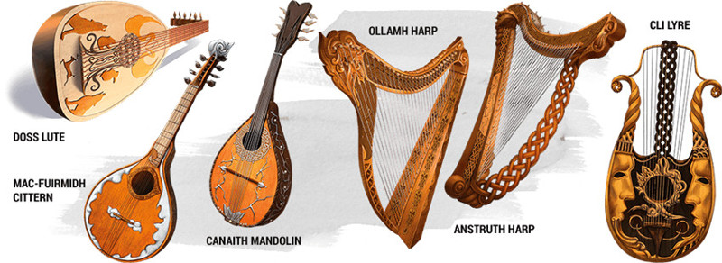

Instrument de barde
Objet merveilleux, variable (nécessite un lien avec un barde)
Un instrument de barde est un magnifique exemplaire dans sa catégorie, supérieur à un instrument ordinaire sous tous rapports. Sept types de ces instruments existent, chacun nommé d'après un légendaire collège bardique. La table suivante liste les sorts spécifiques à chacun des instruments ainsi que leur rareté. Une créature qui tente de jouer d'un instrument sans y être liée doit réussir un jet de sauvegarde de Sagesse DD 15 sous peine de subir 2d4 dégâts psychiques.
Vous pouvez utiliser une action pour jouer de l'instrument et lancer l'un de ses sorts. Une fois que l'instrument a été utilisé pour lancer un sort, il ne peut plus être réutilisé pour lancer ce sort avant la prochaine aube. Les sorts utilisent votre caractéristique d'incantation ainsi que votre DD au jet de sauvegarde des sorts.
Si vous jouez de l'instrument tout en lançant un sort qui charme sa ou ses cibles en cas d'échec au jet de sauvegarde, la cible a dans ce cas un désavantage à son jet de sauvegarde. Cet effet ne s'applique que si vous lancez un sort qui possède une composante somatique ou matérielle.
Vous pouvez utiliser une action pour jouer de l'instrument et lancer l'un de ses sorts. Une fois que l'instrument a été utilisé pour lancer un sort, il ne peut plus être réutilisé pour lancer ce sort avant la prochaine aube. Les sorts utilisent votre caractéristique d'incantation ainsi que votre DD au jet de sauvegarde des sorts.
Si vous jouez de l'instrument tout en lançant un sort qui charme sa ou ses cibles en cas d'échec au jet de sauvegarde, la cible a dans ce cas un désavantage à son jet de sauvegarde. Cet effet ne s'applique que si vous lancez un sort qui possède une composante somatique ou matérielle.
| Instrument | Rareté | Sorts |
|---|---|---|
| Tous | - | Vol, invisibilité, lévitation, protection contre le mal et le bien, plus les sorts listés ci-dessous en fonction de l'instrument |
| Bandore de Fochluchan | Peu commun | Enchevêtrement, lueurs féeriques, gourdin magique, communication avec les animaux |
| Cistre de Mac-Fuirmidh | Peu commun | Peau d'écorce, soins, nappe de brouillard |
| Harpe d'Anstruth | Très rare | Contrôle du climat, soins (emplacement niveau 5), mur d'épines |
| Harpe d'Ollamh | Légendaire | Confusion, contrôle du climat, tempête de feu |
| Luth de Doss | Peu commun | Amitié avec les animaux, protection contre une énergie (feu uniquement), protection contre le poison |
| Lyre de Cli | Rare | Façonnage de la pierre, mur de feu, mur de vent |
| Mandoline de Canaith | Rare | soins (emplacement niveau 3), dissipation de la magie, protection contre une énergie (foudre uniquement) |
Dungeon Master´s Guide
